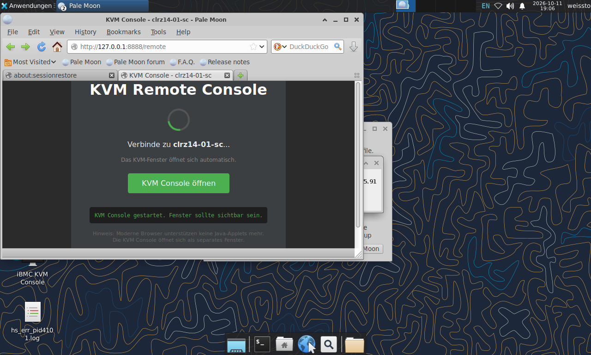

SprechernotizKurz halten. Handzeichen aufgreifen. Kein Marketing — ehrlicher Praxisbericht. HFD-Preis als Vertrauenssignal, nicht als Selbstbeweihräucherung.
Motivation · Der Pivot · 3 min
Von OpenStack zu Bare-Metal K3s
Einfachheit gewinnt. Die VM-/SDN-Abstraktion war für 3 Nodes zu schwer — bare-metal ist schlanker.
SprechernotizLernkurve kurz halten: OVN-Gateway-Redirect-Bug zeigte, dass die Abstraktion für 3 Nodes zu schwer war. Nicht „OpenStack ist schlecht“, sondern „passte nicht zur Skalierung“. Der Pivot zu bare-metal war die richtige Entscheidung.
Hands-on · pi.dev install · 2 min
Mitglied werden — installiert pi
Ein Befehl. Kein API-Key nötig für den Free-Tier.
curl -fsSL https://pi.dev/install.sh | sh
Alternativ: npm i -g @earendil-works/pi-coding-agent (Node 22.19+)
Prüfen: pi --version
Starten: cd <projekt> && pi
SprechernotizDas ist der Einstieg für den Hands-on-Teil. Vorab sagen: „Ihr braucht keinen bezahlten API-Key.“ curl-Installer pinnt alle Dependencies. Wer npm hat: alternativ npm. 2 min Zeit lassen, herumgehen, bei Problemen helfen.
Hands-on · Modell wählen · 3 min
Kostenlos starten — jev-1.13-free
/login → Provider opencode
/model → jev-1.13-free (groß, gratis)
Oder Free-Tier: GROQ_API_KEY / GOOGLE_API_KEY
Der „free big pickle“ reicht für echte agentische Experimente — kein Kostenrisiko.
Sprechernotizjev-1.13-free auf dem opencode-Provider ist kostenlos und groß. Alternativen: GROQ und Google haben ebenfalls Free-Tier. /thinking für Reasoning-Level, Ctrl+P zum Modell-Wechseln. Session wird lokal gespeichert.
Hands-on · Prompt-Ideen · 6 min
Starter-Prompts zum Ausprobieren
„Erkläre SCS-0217 Pod-Security in 3 Sätzen.“
„Schreibe eine default-deny NetworkPolicy für Namespace llm.“
„PVC auf ceph-rbd, 3-fach Replikation — zeige das Manifest.“
„Ceph ist HEALTH_WARN — gib 3 erste Debug-Schritte.“
WSWer hat pi in 5 Min installiert? → herumgehen, helfen.
SprechernotizHerzstück des Workshops. 7 Min für eigene Prompts. Bei Rate-Limits auf GROQ/Google ausweichen. Mit Nachbarn teilen wenn kein Laptop. Fragen für Q&A sammeln.
Sprechernotiz„Verified“ = messbare Tests, kein Bullshit-Bingo. Aber die offenen Lücken klar benennen — das ist das Verkaufsargument bei Behörden/Unis. DSGVO: Cluster noch NICHT für personenbezogene Daten freigegeben.
SprechernotizPositiv rahmen: jeder Stolperstein wurde gelöst und dokumentiert. Firewall: SCS-FIREWALL auf ens3f0. 2–3 Lektionen als Story, nicht als Klage. openEduSuite kommt gleich.
openEduSuite · Workload · 4 min
Souveräne Bildungsplattform, multi-tenant
Tenantsedu · staff · students · sme · llm · predictive-agent
Images: eigene Nix-Builds auf GHCR → lokale Zot-Registry. opendesk-sme noch Degraded (stale Digests) — transparent.
SprechernotizMulti-Tenant-Plattform für Bildung. Auth über Keycloak/OIDC. E-Mail-Stack komplett sovereign. opendesk-sme ehrlich als Degraded benennen — zeigt Betriebsrealität.
Sprechernotiz„Agentic“ = tool-nutzend, mehrschrittig (Retrieval → Inferenz → Verifikation), kein Einzel-Prompt. Der Agent trägt den Cluster-Zustand mit — das ist die Brücke „Agentic AI meets Sovereign Cloud“. Modellname [verify].
openEduSuite · Live-Demo · 4 min
Cluster, Login, Agent-Trace

Live iBMC KVM-Konsole — Server-Console via Pale Moon + Java Web Start
Dashboard: 3 Nodes · Ceph HEALTH OK (8/8) · SCS-Board
Login via Keycloak/OIDC → agentischer Workflow (§ 13)
Fallback: Screencast + Architektur-Diagramm, falls die Demo hakt.
SprechernotizVorher testen: Tunnel/Login, Ceph-Status, open-webui. Bei Haken: ruhig auf Fallback umschalten. Zeit im Blick — 4 Min. hart.
Lessons · 3 min
Fünf Dinge zum Mitnehmen
Fang klein an, lerne schnell — OpenStack passte nicht zur Skalierung.
Bare metal statt VM-Schicht — weniger Abstraktion, mehr Kontrolle.
Constraints sind Features — Quantisierung schlägt GPU-Käufe.
„Verified“ überzeugt — SCS-Tests öffnen Türen, mit ehrlichem Lücken-Reporting.
Dokumentiere wie ein Verrückter — Runbooks, DSFA, Checklisten.
SprechernotizEssenz. Punkt 4 betonen: Verified öffnet Türen bei Behörden/Unis — aber nur mit ehrlichen Lücken. Punkt 5: Runbooks, DSFA, Checklisten — sonst ist Wissen eine Einbahnstraße.
SprechernotizQ&A-Moderation: „What if“-Fragen sammeln. Bei Detailfragen zu [verify]-Werten ehrlich auf Quelle/iBMC verweisen. Backup-Folien bereithalten. Kontakt-Links für Follow-up.